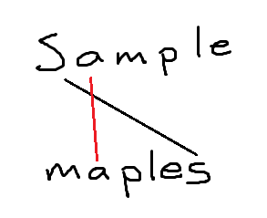
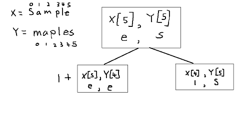
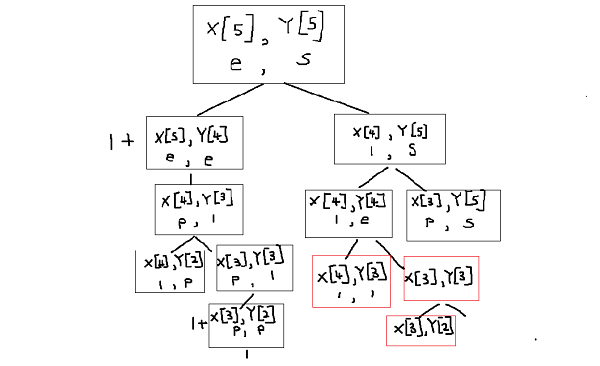
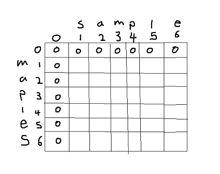

Longest Common Subsequence:
date posted: 2020-03-07
What is LCS?
LCS stands for Longest Common Subsequence. First two words pretty much explain everything
therefore let me explain what subsequence is.
We know that substring is a continous subset of a string. for example if we have a str = "hello" its
substring would be "hel", "llo", and so on
however not "hlo" it is not continuous.
Subsequence is similar to substring however it does not have to be continuous,
just need to be in same relative order.
"hlo" would be subsequence of word "hello" since "h" comes before "l" and "l" come before "o" however "lhe" is not since "h" must come first in the word "hello".
So longest common subsequence is, within set of subsequences one that has most common letters.
Let's further understand this concept following a simple example:
s1 = "sample" s2 = "maples"subsequences = [{m,p,l,e}, {a,p,l,e}, {p,l,e}, {l,e}, {e}, {s}]
hm... I really don't think this is a good example... Let me use my drawing skills to clarify this concept.
First I will create line connecting characters of our first subsequence set {m, p, l, e} notice that there are no lines crossing which implies that all characters are in relative order.

All sets of subsequences do not have crossing lines hence they are subsequence.
One might think that since there are same characters in each string longest subsequence is
{s, a, m, p, l, e}

As you can see if we join "s" first then there cannot be anymore joins since it will cross the black line thus {s} would be only subsequence if we start with "s".
I hope everyone understood what lowest common sequence is. Now we will find lcs of two strings by using two techniques of dynamic programming that we've learned in previous blog
Recursion
Sorry, before moving on to Tabulation and Memoization lets try to find lcs using recursion to appreciate dynamic programming more.
It is very simple code, lets go through it with our example above.
- X = string 1
- Y = string 2
- m = len(X)
- n = len(Y)
let X = "sample" and Y = "maples"
def lcs(X, Y, m, n):
if m == 0 or n == 0:
return 0
elif X[m-1] == Y[n-1]:
return 1 + lcs(X, Y, m-1, n-1)
else:
return max(lcs(X, Y, m, n-1), lcs(X, Y, m-1, n))
when we run the function first, since both X,Y length = 6 if statement is passed, now onto elif statement.
Looking at the picture below we see that elif statement is also not satisfied therefore onto else statement. From our first block
we move back one string from X,Y and take the bigger one.
left box represents lcs(X,Y,m, n-1) and right box represents lcs(X,Y, m-1,n). Note that running left box gets us to elif statement therefore it has a value of 1 and runs the function again but this time moving back one position for both string, because they've matched already. For the box on the left it goes once again into else statement.

Keep on calling lcs function recursively until you've covered all letters in each string. Then moving from leaf node we take maximum value at each node, upto very top and
that value will be our longest common sequence, in this case it would be 4.
I didn't finish the whole tree but hope you get the point. One thing to notice is that boxes in red means that those values have been computed already,
people who've read my previous blog on dynamic programming probably know what do to.
Yes, there is no need to compute same questions twice => use dynamic prgramming.
With recursive function you can see in worst case, where there is no subsequence it will have time complexity of O(2^n) since at each node there will be a split.
We now know how slow it is to find lcs using recursion so it is time to move on to Tabulation.
Tabulation
We have learned that tabulation is creating a table to store answers from previous subproblems and using it.
Using previous example:
I should've used shorter strings... Anyways below is matrix created that will help us find lcs. Cells filled in zeroes help us get started with filling our table.
Now let's fill the rest. Starting from 1st row we compare letters in each column and if they match we add 1 to diagonal(upper left) value. Else if they do not match we take maximum value of upper or left value.

"m" != "s", we take maximum value of upper or left value which are 0, 0 therefore we take either 0.
"m" != "a", same as above, we get 0.
"m" == "m", match! add 1 + digonal(upper left) value so 1+0 = 1.
Repeat the process until all cells are filled.

So we can see that highest value is 4 => lcs just like value we found using recursion but with O(mxn) time complexity.
But what is are the string that form longest common subsequence? That is what the red lines are for. So starting from bottom right, we got value 4 from upper cell so we move up. Next we got 4 from adding 1 + upper left value so we move in that direction, repeat the process.
Every diagonal line represents words that matches therefore e, l, p, a. "aple" is the longest common subsequence.
But notice in our first example we said that our lcs was "mple". Well they both are, at (a,m) column you can see that we could've went either direction, up or to the left and if we had gone upward we would end up with "mple".
Python code:
def lcs(X,Y):
m, n = len(X), len(Y)
matrix = [[None]*(n+1) for i in range(m+1)]
for i in range(m+1):
for j in range(n+1):
if i == 0 or j == 0:
matrix[i][j] = 0
elif X[i-1] == Y[j-1]:
matrix[i][j] = matrix[i-1][j-1] + 1
else:
matrix[i][j] = max(matrix[i-1][j], matrix[i][j-1])
return L[m][n]
Memoization
Similar to tabulation it simply keeps answers of previous questions therefore no need to re-compute. But as I've explained before memoization is referred in problems where we do not need all previous questions.Simliarily we create a table but in this case we set our first letters to be in 0th column and 0th row.
First, create a table and fill all values as -1 for keeping track of what we've seen before.
X = "sample" Y = "maples" table = [[-1 for i in range(len(X)] for j in range(len(Y))]
You can see below that there is only 2 lines of code added from recursive function that is, 2nd if statement which checks whether or note we've already seen that question before and return it if we have otherwise move on which is exactly same as our previous recursive function.
def lcs_memoization(X,Y, m,n, table):
if m==0 or n ==0:
return 0
if table[m-1][n-1] != -1:
return table[m-1][n-1]
if X[m-1] == Y[n-1]:
table[m-1][n-1] = 1+ lcs_memoization(X, Y,m-1,n-1, table)
return table[m-1][n-1]
else:
table[m-1][n-1] = max(lcs_memoization(X,Y, m, n-1, table), lcs_memoization(X,Y, m-1, n, table))
return table[m-1][n-1]
lcs_length = lcs_memoization("sample", "maples", 6,6,table)
To see the difference to tabulation approach let me print out table created. We can see many -1 which means that those problems were never solved so as opposed to tabulation approach where it computes every single problems in memoizations it only computes problems it needs therefore in questions where we do not need to know all previous answers this would give better performance than tabulation method.
[[0, 0, 0, 0, 0, 1], [-1, 1, 1, 1, 1, 1], [1, 1, 1, 1, 1, 1], [-1, -1, 2, 2, 2, 2], [-1, -1, -1, 3, 3, 3], [-1, -1, -1, -1, 4, 4]]
In conclusion just like tabulation it has O(mxn) time complexity however depending on questions you are trying to solve one way is preferred over another just like in finding lcs where memoization would be preferred.